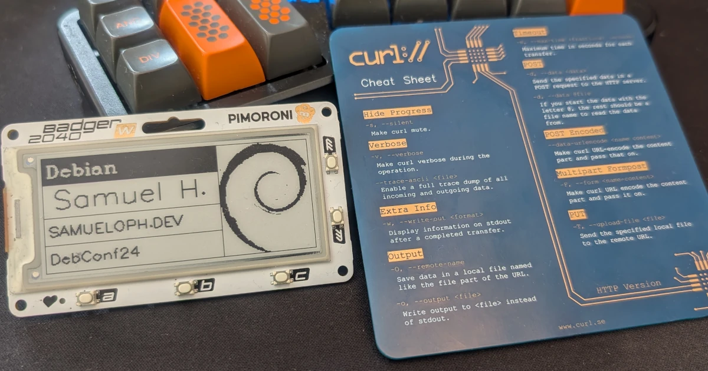
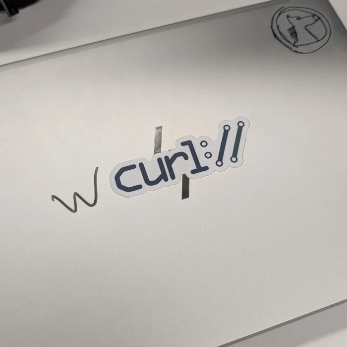
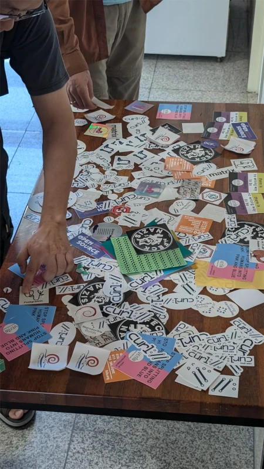
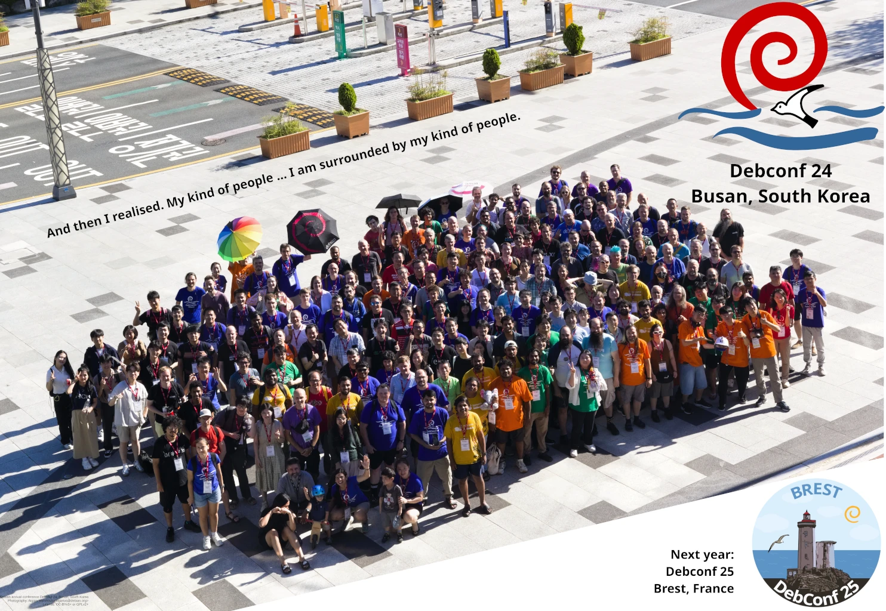

DebConf24 was fun! Security, curl, wcurl, Debian's quality
Samuel Henrique (samueloph) September 04, 2024 [debian, curl, security, debconf] tl;dr
DebConf24 was fun!
A playlist of all of my talks, with subtitles (en, pt-br) and chapters is available on YouTube.
Overview
DebConf24 was held in Busan, South Korea, between Sunday July 28th to Sunday August 4th 2024.
As usual for DebConfs, I had a great time meeting my friends, but also met new people and got to learn a bit about the interesting things they're working on.
I ended up getting too excited during the talk submission stage of the conference and as a result I presented 5 different activities (3 talks, 1 BoF and 1 lightning talk).
Since I was too busy with the presentations, I did not have a lot of time to actually hang out with folks, or even to go out in the city, I guess I've learned my lesson for next time.
The main purpose of this post is to write about all of the things I presented at the conference. I did want to list some of the interesting talks I've watched, but that I would not be able to be fair as I'm sure I would miss some.
You can get the schedule and the recordings of any talks from the conference's website: https://debconf24.debconf.org/schedule/
wcurl Lightning Talk
The most fun of my presentations, during the second-to-last day of the conference, I've asked for help from Sergio Durigan Junior <sergiodj> to setup an URL containing a whitespace and redirecting that to wcurl's manpage.
I then did a little demo to showcase why me (and a lot others) struggle with downloading things with curl, and how wcurl solves that.
https://www.youtube.com/watch?v=eM8M5qa4pPM
Fixing CVEs on Debian: Everything you probably know already
I've always felt like DebConf was missing security-related talks, so I decided to do something about it and presented a few of the things I've learned when fixing CVEs for Debian.
This is an area where we don't get a lot of new contributors, I'm trying to change that, and this talk can be used to introduce newcomers to it.
https://www.youtube.com/watch?v=XzNVVILVyUM
The secret sauce of Debian
Debian is not very vocal about all of the nice things it has regarding quality-assurance, testing, or CI, even though it's at the state-of-the-art for a lot of things.
This talk is an initial step towards making people aware of the cool things happening behind the scenes. Ideally we should have it well-documented somewhere.
https://www.youtube.com/watch?v=x_X2IBnpjic
"I use Debian BTW": fzf, tmux, zoxide and friends
One of my earliest good memories of Debian was when it started coming with a colored PS1 by default, I still remember the feeling of relief whenever I jumped into a Debian server and didn't have to deal with a black and white PS1.
There's still a lot of room for Debian to ship better defaults, and I think some of them can actually happen.
This talk is a bit of a silly one where I'm just making people aware of the existence of a few Golang/Rust CLI tools, and also some dotfiles configurations that should probably be the default.
https://www.youtube.com/watch?v=tfto3Seokn4
curl
The curl project does such a great job with their security advisories that it will likely never receive the amount of praise it deserves, but I did my best at mentioning it throughout my CVEs talk.
Maybe I will write more extensively about this someday, but in case I don't:
There's no other project which always consistently mentions the exact range of commits that are affected by a given CVE.
Forget about whether the versions are EOL, curl doesn't have LTS releases, yet they do such a great job at clearly documenting their CVEs that I would take that over having LTS releases anytime (that's for curl at least, I acknowledge some types of projects have a different need for LTS releases).
Not only that, but they are also always careful about explaining alternative mitigations such as configuration changes, build flags that defuse the exploitation, or parameters that you should not use.
Just like we tend to do every time we meet, me and the other Debian curl maintainers spent the first 2 or 3 days of the conference talking about how we wanted to eventually meet up to discuss the package.
It was going to be informal, maybe during the Cheese and Wine party, but then I've realized we should make it part of the official schedule, which would also give us the recordings for later.
And so the "curl maintainers BoF" happened, where we spoke about HTTP3, GnutTLS, wcurl and other things.
https://www.youtube.com/watch?v=fL7hSypUTdM
wcurl
Right after that BoF, Daniel Stenberg asked if we were interested in having wcurl adopted into curl, which we definitely were, so wcurl is now part of the curl project.
Daniel was also kind enough to design a logo for the project, which makes me especially happy because I can stop with my own approach at a logo (which I had to redo every few days):
And here is the new logo:
Much better, I would say :)
curl Swag
DebConf24 was my chance at forwarding some curl swag items to the other curl maintainers, so both Sergio Durigan Junior <sergiodj> and Carlos Henrique Lima Melara <charles> got the curl-up t-shirt and the very cool curl PCB coaster, both gifted by Daniel Stenberg.
Unfortunately I didn't have any of that for DebConf attendees, but I did drop loads of curl stickers at the stickers table, they were gone very quickly.
For the future
I used to think the most humbling experience you could have as someone who presented a talk was to have to watch it yourself, you notice a lot of mistakes and you instantly think about things that should be done differently.
It turns out the most humbling thing to do is actually to write subtitles for your talks, I noticed every single mistake, often multiple times.
So after spending more than 30 hours writing the subtitles for both English and Brazilian Portuguese for my talks, I feel like it's going to be much easier to avoid committing the same mistakes again. After some time you stop feeling shame about those mistakes and you're just left with feelings of annoyance, and at that point it becomes easier to consciously avoid them.
I am collecting a list of things I wish I had done differently on all of those talks, so if I end up presenting any one of them again, it will be an improved version.

Photography: Aigars Mahinovs <aigaruius@debian.org>
License: CC-BYv3+ or GPLv2+